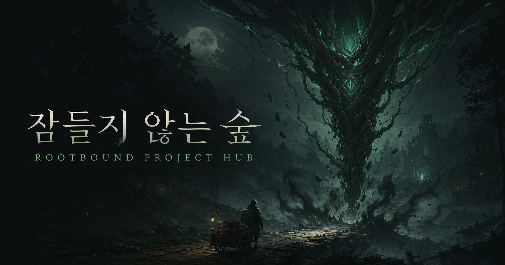
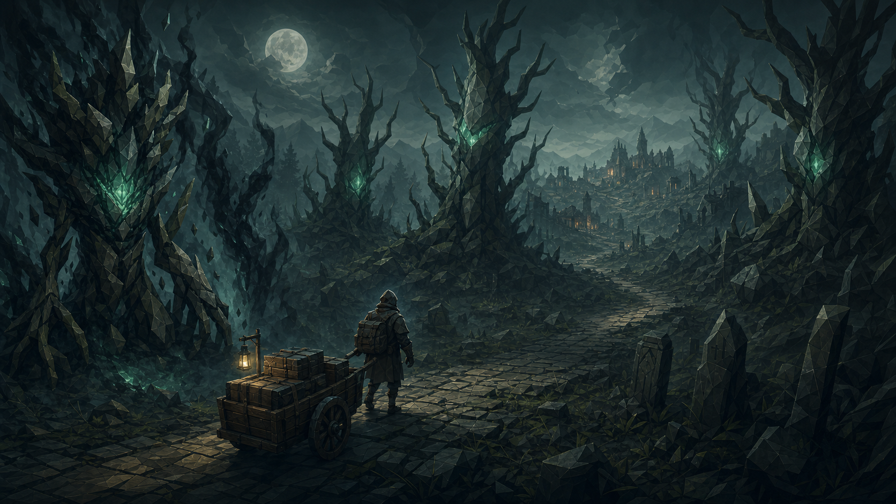
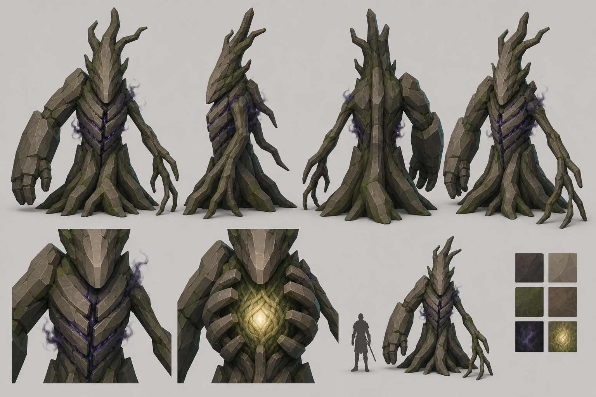

0%
CHECKLIST PROGRESS
DARK FANTASY ROGUELITE · UNITY 6
검은 안개가 다시 세우는 숲. 세계관과 전투 설계부터 실제 구현, 다음 작업과 피드백까지 한곳에서 확인하는 게임 바이블입니다.

CHECKLIST PROGRESS
GAME BIBLE · WORLD
안개는 나를 죽이지 않는다.
숲을 다시 세울 뿐이다.
장소는 되돌아가지만 모험가는 완전히 되돌아가지 않는다. 매번 달라지는 절차적 숲, 남는 기억과 무덤, 30%의 성장이 하나의 세계관 규칙으로 연결된다.
CORE LOOP
THE COMPLETE STORY · 9 CHAPTERS

PROJECT SYSTEMS · COMPLETE GUIDE
HOW ROOTBOUND WORKS
이 페이지는 게임 규칙과 실제 구현 상태를 함께 설명합니다. 시스템 이름만 나열하지 않고 무엇을 입력하면 어떤 규칙을 거쳐 무엇이 남는지, 아직 어떤 작업이 필요한지까지 연결합니다.
SOURCE DOCUMENTS
각 시스템 카드는 현재 프로젝트 문서를 기준으로 정리했습니다.
ARSENAL · WEAPONS
CAPTURED FROM UNITY
MEMORY COMBAT · ORDERED COMBO
22 ATTACK MEMORIES
가볍게 흐름을 열고, 상승과 돌진으로 연결한 뒤, 무거운 마무리에 누적 배율을 쏟아붓는다. 피격 시 흐름은 흩어지지만 회피 캔슬 중에는 유지된다.
사망 후 다음 런에서도 보유 기억과 장착 순서를 유지합니다. 락온 중에는 Q로 지정한 대상을 우선해 돌진 공격을 연결합니다.
IN-GAME ICONS
EQUIPMENT · ARMOR & ACCESSORIES
ARMOR CATALOG
ACCESSORIES
BESTIARY · THE TWISTED
CAPTURED FROM UNITY
FINAL BOSS · CHAPTER 9
설계·레퍼런스 확정 · 모델 제작 대기숲 전체가 하나의 생명체이고, 마지막 장의 보스는 그 심장부다. 오랫동안 마을을 지켜 온 수호자가 힘을 잃으며 검은 안개를 흘리고 있다.

NOW BUILDING
MILESTONES
QUALITY GATE
NEXT CRITICAL PATH
스토리 반영과 락온 스트레이프를 먼저 닫고, 확보한 레퍼런스로 「잠들지 않는 뿌리」 모델 제작에 들어갑니다.
RECENT ACTIVITY
PROJECT CONTRACT
“모아두면 전부 잃는다.
살아서 돌아와, 몸에 새겨라.”
SOURCE OF TRUTH
LOCAL FEEDBACK BOARD
이 브라우저에 자동 저장됩니다.